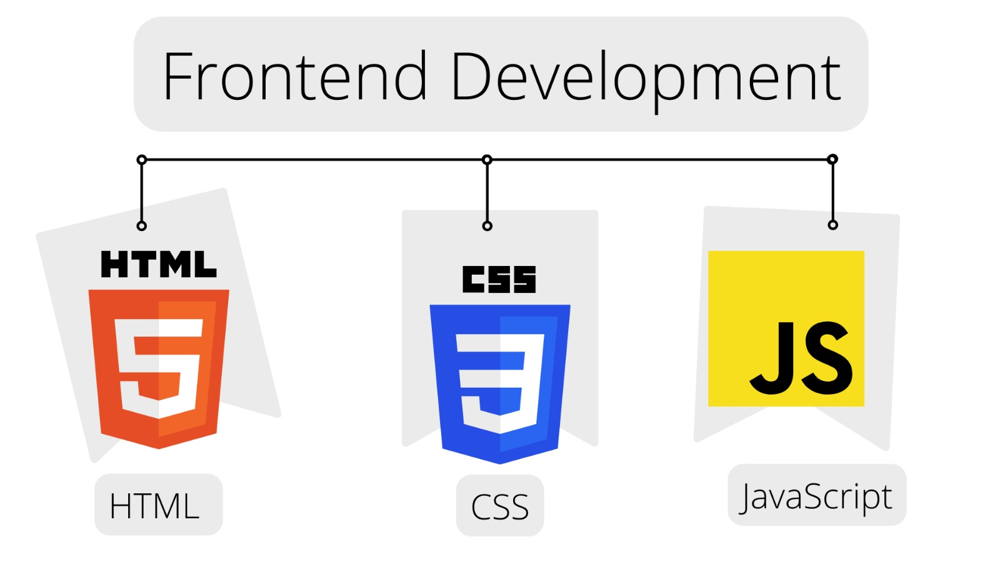

Frontedn Development is the development of the graphical user interface of a website, through the HTML,CSSand Javascript, so that users can view and interact with that website
HTML: The hyper text markup language or HTML is the standard markup language for documents designed to be displayed in browser
CSS: CSS is asty;e sheet lannguage used for describing the presentation of dcoument writeen in markup langugae or XML.
Javascript: JS is a programming langauge that is one of thhe core technologies of the world wide web alongside HTML,and CSS.It is used to add functionality in the website